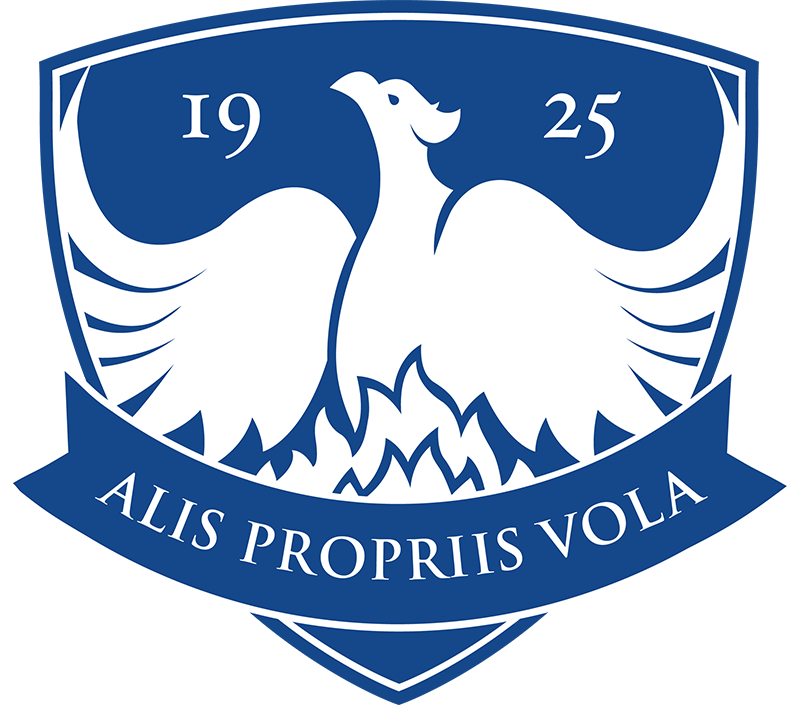
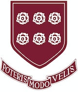

Program
프로그램 구성
- 학년별 맞춤 학업 역량 진단
- 인터뷰 · 에세이 프렙 (학부모 동반 상담 가능)
- SSAT 등 입학 시험 대비 연계
- 학교 선정 및 지원 일정 관리
Process
상담부터 합격까지, 4단계로 진행됩니다
1
학업 역량 진단
학생의 현재 학업 수준과 강점을 파악하는 첫 만남입니다.
2
맞춤 커리큘럼 설계
목표 학교와 학년에 맞춘 준비 로드맵을 세웁니다.
3
인터뷰 · 에세이 프렙
눈높이에 맞는 코칭으로 지원 준비를 함께합니다.
4
합격 & 등록 지원
합격 이후 등록, 기숙사 준비까지 안내합니다.
2025년 3월 기준
합격 실적
주니어 보딩스쿨 합격
Rectory School

Bement School
Fay School